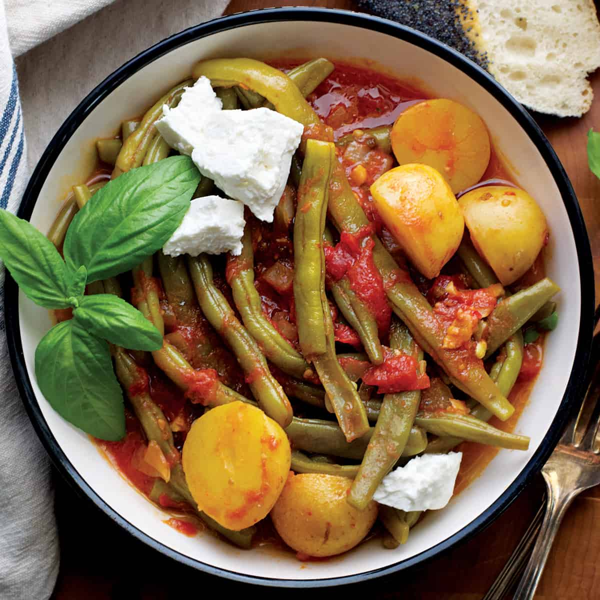

Fasolakia

Description
Authentic Greek green beans, braised with potatoes in a tomato and olive oil sauce. Perfect garnished with basil and paired with feta and crusty bread.
Ingredients
- 500g green beans, trimmed
- 1 large onion, chopped
- 2 cloves garlic, minced
- 1 medium potato, chopped into large pieces
- 1 tin chopped tomatoes
- 100ml olive oil
- 1 teaspoon sugar
- 1/2 teaspoon salt
- Freshly ground black pepper
- Chopped parsley, to garnish
Method
- Heat olive at medium to low heat. Add onion and sauté until soft.
- Add potatoes and sauté for 2-3 minutes.
- Add garlic and cook for 1 minute.
- Add beans and stir until covered in oil.
- Add tomatoes, parsley, sugar and salt and pepper and stir together.
- Simmer with lid on for around 40 minutes. It's ready once the beans are soft.
- Enjoy garnished with parsley.